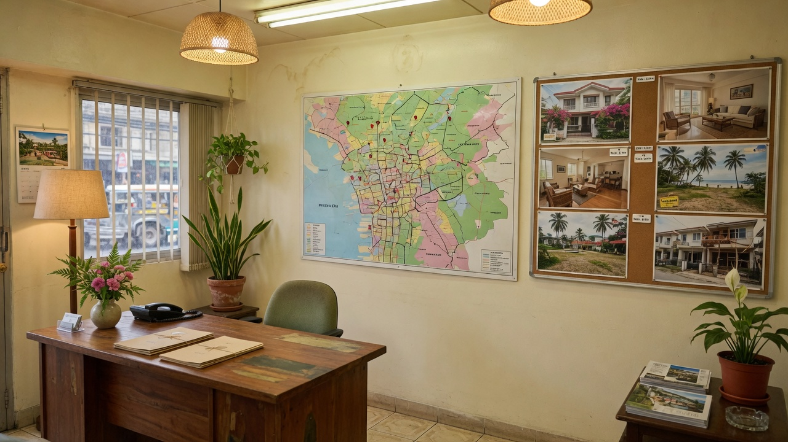
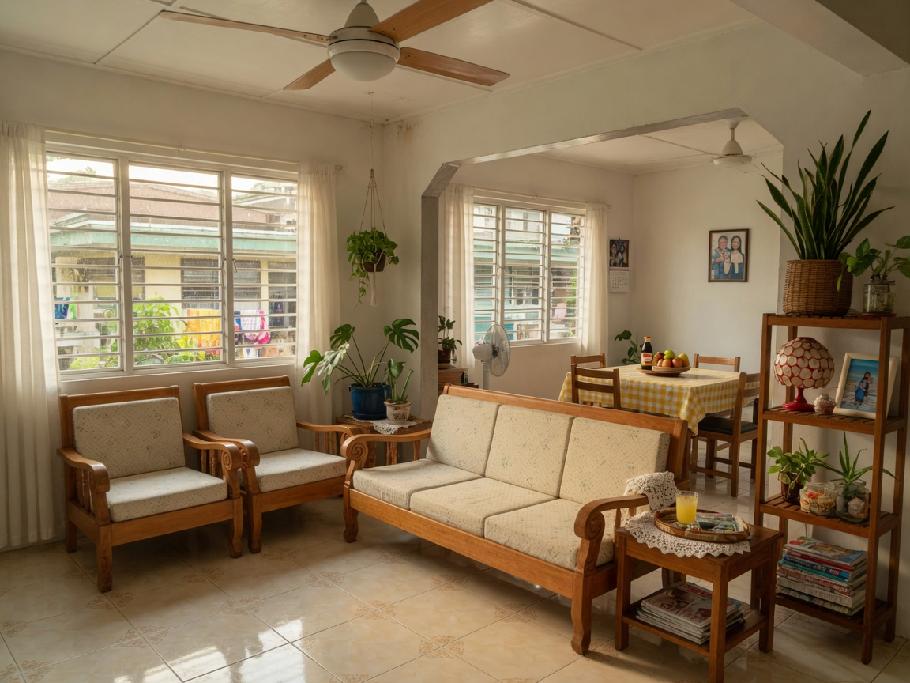

Simplify social posts
Write the property once. Pull a caption, price, barangay, and photo set that is ready for Facebook, Instagram, or a status — without rebuilding the listing every afternoon.
About us
Mezza is built for licensed realtors in General Santos City. Posting should be simple. Searchers should land on the same home every time. Photos and details should live in one stack — not across phones, group chats, and old Facebook albums.
Buyers already search for houses in City Heights, lots in Bula, and warehouses in Tambler. We give each realtor a clean listing page on the open web, so those searches keep coming back to their inventory.

What we do
Write the property once. Pull a caption, price, barangay, and photo set that is ready for Facebook, Instagram, or a status — without rebuilding the listing every afternoon.
Social posts disappear. A listing page does not. We help realtors keep a GenSan-focused site so people who search “house and lot Lagao” or “lot for sale Bula” land on their properties, not a buried thread.
Every photo, floor area, title note, and asking price sits in one place. When a buyer asks, the realtor opens the stack — not a camera roll from three phones.

Why this city
They screenshot a Facebook post, then they Google the barangay. If the realtor only lives on social, the second search goes to someone else. We keep both paths pointed at the same inventory.